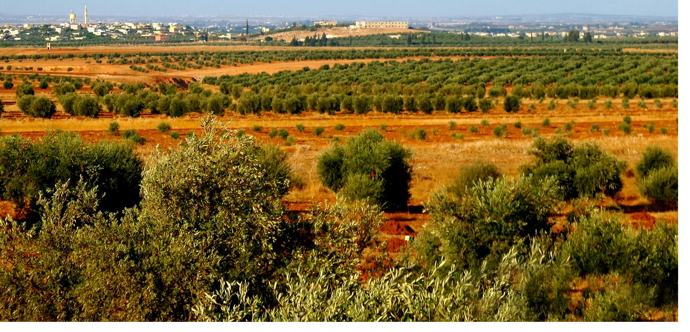

Les plaines couvrent plus d'un tiers de la superficie de la Terre et sont
réparties sur tous les continents du monde, à l'exception de l'Antarctique . Il existe
également une grande différence dans la végétation des plaines réparties dans le monde,
certaines étant couvertes d'arbres et d'autres. sont recouverts d'herbes.